Лабораторная работа №2
Модель SIR и модель Лотки-Вольтерры
2026-03-07
Модель SIR
Создание файла

Программный код модели SIR

Запуск скрипта
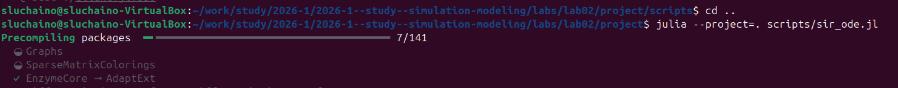
Параметры модели

Результаты модели SIR
Динамика эффективного репродуктивного числа
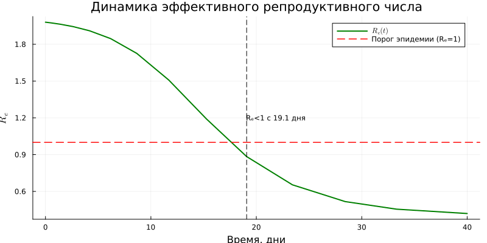
Динамика числа зараженных
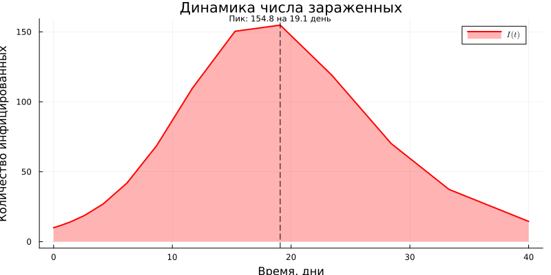
Экспоненциальный рост
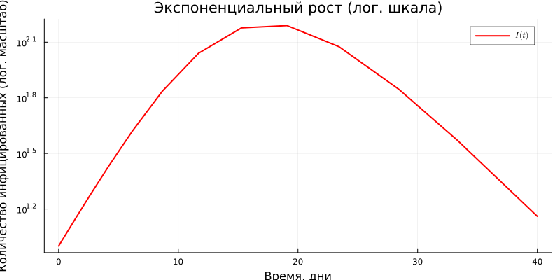
Динамика всех групп
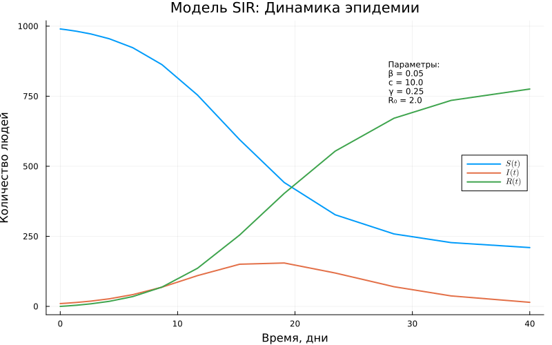
Компактная панель графиков
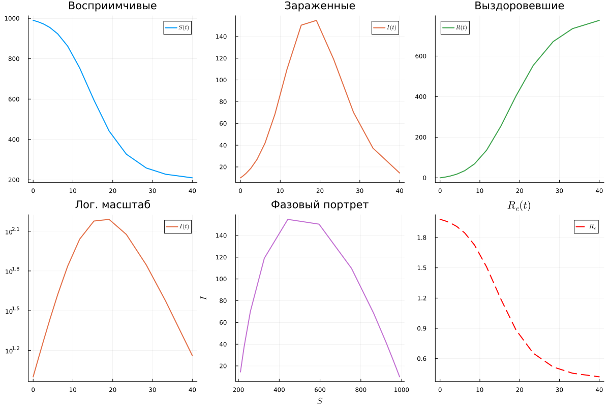
Динамика в процентах
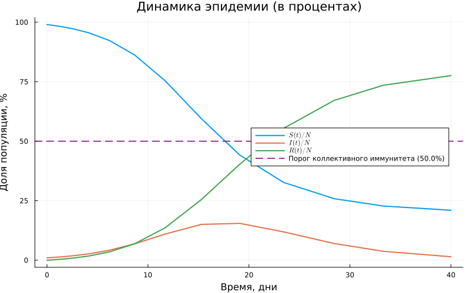
Фазовый портрет

Литературное программирование SIR
Литературный код

Генерация форматов
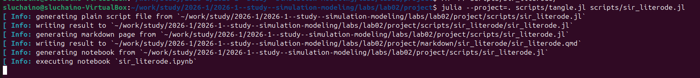
Jupyter Notebook
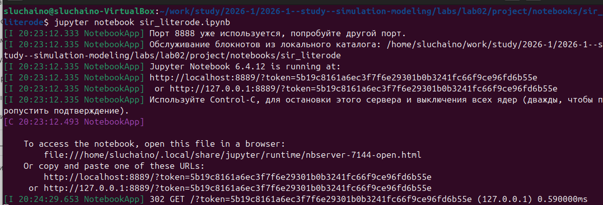

Quarto-документация

Чистый код

Модель Лотки-Вольтерры
Создание файла

Программный код

Запуск скрипта
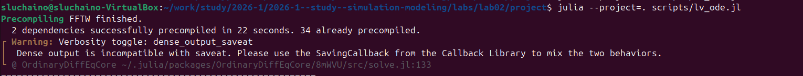
Результаты в консоли

Результаты модели Лотки-Вольтерры
Производные популяций

Динамика популяций

Таблица результатов

Фазовый портрет
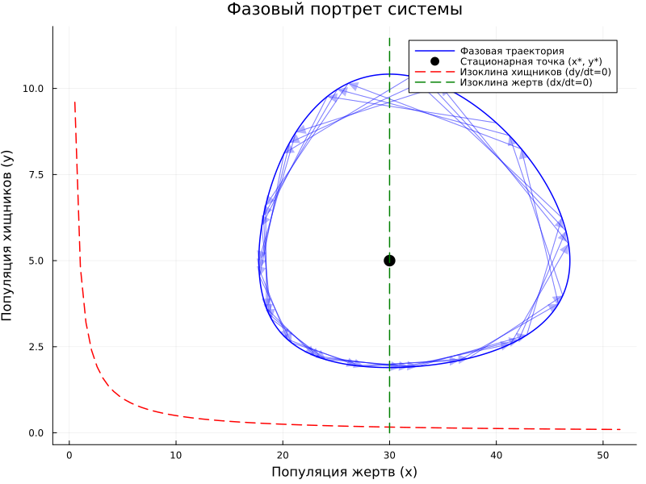
Относительные темпы роста
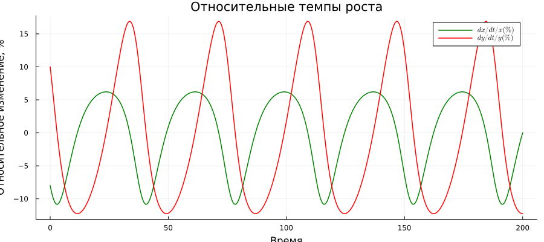
Спектральный анализ

Литературное программирование Лотки-Вольтерры
Литературный код (часть 1)

Литературный код (часть 2)

Литературный код (часть 3)

Генерация форматов

Jupyter Notebook

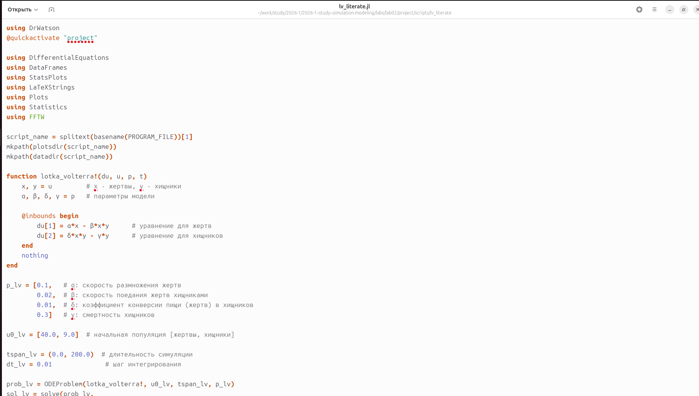